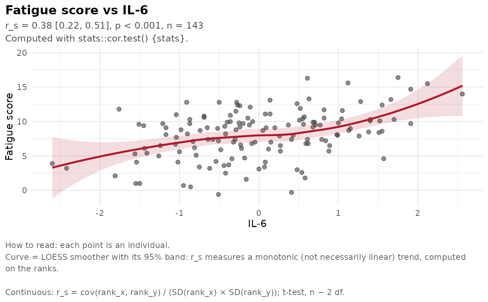
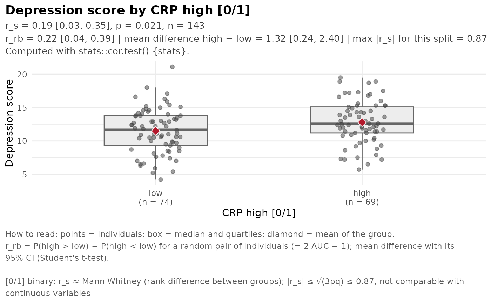
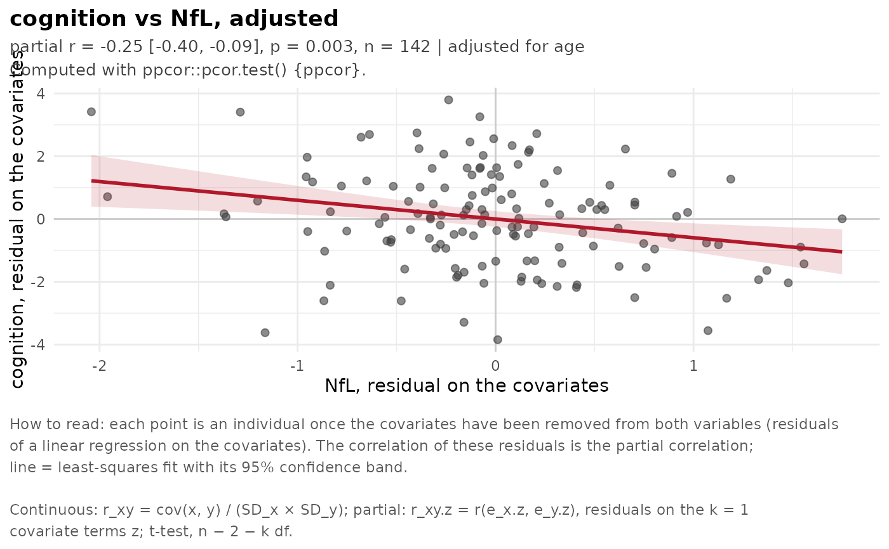

Plot of one correlation, with its coefficient, CI and test in the subtitle
Source:R/plot_pair.R
plot_cor_pair.RdWhat is drawn is what the coefficient measures:
two continuous variables, unadjusted: scatter plot of the raw values, least-squares line (Pearson) or LOESS curve (Spearman, Kendall: monotonic trend);
one binary variable, unadjusted: the continuous variable by group (box, points, diamond = mean), with r_rb and the difference in means (
cor_binary_effects());with covariates: added-variable plot, i.e. residuals of y against residuals of x on the covariates (ranks for Spearman), whose correlation IS the partial correlation.
Arguments
- data
data frame
- x, y
names of the two variables
- covariates
covariates of the partial correlation (
NULL= unadjusted)- labels
named vector variable -> display label
- meth
"spearman"(ranks),"pearson"(values) or"kendall"- engine
"ppcor"(default) or"base"(residual method)- ci
confidence level of the interval (
NULL= none); Fisher z on n - k- bin_mark
marker appended to the label of a binary variable
- base_size
base font size
- title
title (default "
vs ") - palette
colours (named low / high);
highis used for the line and the means
Examples
d <- simulate_cor_data(150)
plot_cor_pair(d, "IL6", "fatigue", labels = attr(d, "labels"))

plot_cor_pair(d, "BIN_CRP", "depression", labels = attr(d, "labels"))

plot_cor_pair(d, "NfL", "cognition", covariates = "age", meth = "pearson")
